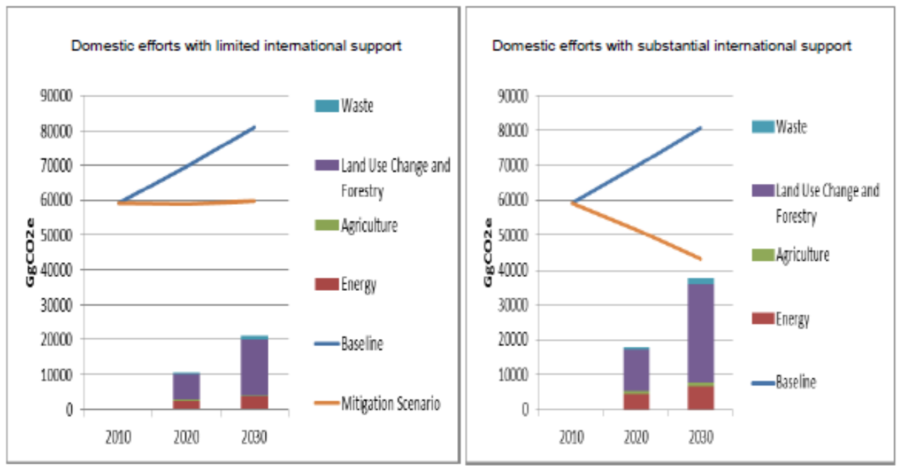

This document presents Zambia’s Intended Nationally Determined Contribution (INDC) to the 2015 Agreement on climate change in response to decisions adopted at the 19th and 20th sessions of the Conference of the Parties to the United Nations Framework Convention on Climate Change (UNFCCC).
Zambia’s INDC includes both mitigation and adaptation components based on her national circumstances and is in line with decisions 1/CP.19 and 1/CP.20. The successful implementation of Zambia’s INDC will result in an estimated total emission reduction of 38,000GgCO2eq which translates to 47% (internationally supported efforts) against 2010 as a base year. This emission reduction is conditional and subject to the availability of international support in form of finance, technology and capacity building. The total budget for implementing both components is estimated at US$ 50 billion by the year 2030, out of this USD 35 billion is expected to come from external sources while $15 billion will be mobilized from domestic sources.
Climate variability and change has become a major threat to sustainable development in Zambia. The country is already experiencing climate induced hazards which include drought and dry spells, seasonal and flash floods and extreme temperatures. Some of these hazards, especially the droughts and floods have increased in frequency and intensity over the past few decades and have adversely impacted food and water security, water quality, energy and livelihoods of the people, especially in rural communities.
Recent climate trends based on records from 1960 to 2003 indicate that mean annual temperature has increased by 1.3°C, since 1960, an average rate of 0.34°C per decade. On the other hand, the mean rainfall over Zambia has decreased by an average rate of 1.9 mm/month (2.3%) per decade since 1960. The future trends in the country are towards a higher average temperature, a possible decrease in total rainfall, and some indication of heavy events of rainfall. An assessment of potential climate impacts shows that they will seriously undermine the efforts to improve the livelihoods of Zambians if left unaddressed [1]. The assessment [2] further analyzed the negative impacts of climate change on key economic sectors including water, agriculture, forestry, wildlife, tourism, mining, energy, infrastructure and health. Further studies have estimated GDP loss over a 10-20 year mid-term planning horizon for agriculture productivity and its associated effects on poverty levels[3], the potential impact of an energy crisis, the higher cost of treating climate related diseases such as malaria and malnutrition, and the loss of natural resources which provide critical ecosystem services to urban, peri-urban and rural communities [4].
The aggregated estimated total GDP loss by sector was in the range of USD 4,330-5,440 million with the following sector GDP losses: Agriculture (2,200 - 3,130), Energy related (270 - 450), Health (460), and Natural Resources (1,400). In view of these challenges, Zambia has in the recent past developed various climate change-related policies, strategies, projects and programs in response to climate change impacts. These include: the National Policy on Environment (NPE, 2007); the National Climate Change Response Strategy (NCCRS, 2010); National Forestry Policy of 2014; National Energy Policy of 2008, The National Agriculture Policy of 2014 and Transport Policy of 2002; National Strategy for Reducing Emissions from Deforestation and Forest Degradation (REDD+, 2015); Second National Biodiversity Strategy and Action Plan (NBSAP2); the National Adaptation Plan of Action on Climate Change (NAPA, 2007); Technology Needs Assessment (TNA, 2013); Nationally Appropriate Mitigation Actions (NAMAs, 2014); Second National Communication (SNC, 2015).
These policies, strategies, programmes and projects are aligned with the Revised Sixth National Development Plan (RSDNP) and the Vision 2030 which promotes “A prosperous middle income country by 2030”, both of which support development of a low carbon and climate-resilient development pathway. In addition, Government ratified the Kyoto Protocol in 2006 among other things to facilitate implementation of the Clean Development Mechanism. The country is also in the process of developing its National Adaptation Plan (NAP) for long term adaptation planning and mainstreaming of climate change into national development planning process. The development of the Seventh National Development Plan (SeNDP, 2017-2021) is also underway which will take into account climate change issues
An assessment undertaken as part of the INDC preparation for the mitigation component revealed that mitigation policies/actions/programs converge into three programs which have mitigation and adaptation effects: Sustainable Forest Management, Sustainable Agriculture and Renewable Energy and Energy Efficiency.
Similarly, adaptation measures identified based on vulnerability assessment of seven key economic sectors (agriculture, water, forestry, energy, wildlife, infrastructure and health) comprise three goals/programs that have strong synergies with mitigation. These are: Adaptation of strategic productive systems (agriculture, forests, wildlife and water); Adaptation of strategic infrastructure and health systems; and Enhanced capacity building, research, technology transfer and finance.
Zambia intends to reduce its CO2eq emissions by implementing three (3) programs driven by the country’s Climate Response Strategy and supported by national development policies including energy, forestry, agriculture, water, Town and Country Planning, sanitation, and transport. Further, these programs have been developed based on Zambia’s plans and actions and supported by various climate-related activities such as REDD+, NAMAs and Technology Needs Assessment (TNA), among others (Table 1).
Table 1: Zambia’s Programs Contribution to its National Mitigation Goal
| Name of Programme | Description | Objectives of the Programme | Co-benefits [5] |
|---|---|---|---|
| Sustainable Forest Management | Program involves implementing
|
To promote natural regeneration, afforestation/ reforestation, sustainable charcoal production and utilization practices, and generation of electricity from forest waste and residues. |
|
| Sustainable Agriculture | Program involves implementing
|
To promote conservation/ smart agriculture activities leading to adaptation benefits and enhancing climate resilience, especially in rural areas, and generation of electricity from agriculture waste. |
|
| Renewable Energy and Energy Efficiency | Program involves implementing
|
To promote the switching from conventional and traditional energy sources to sustainable and renewable energy sources and practices, and use of off grid renewable energy technologies for rural electrification as decentralized systems. |
|
The extent and magnitude of contribution of Zambia’s GHG reduction will depend on the availability of resources from: (i) domestic efforts with limited international support and (ii) Domestic efforts with substantial International support, as shown in Figure 1.

Figure 1: Extent and magnitude of contribution of Zambia’s GHG reduction with scenarios for limited and substantial international support
Implementation of the domestic efforts with substantial international support is conditional upon strong commitment of international climate, bilateral and multilateral finance in addition to provision of domestic resources. It is expected from this scenario that by the end of 2030, estimated 38,000 Gg CO2eq could be mitigated, compared to 20,000 Gg CO2eq under the domestic efforts with limited international support. This translates into a reduction potential of 25% and 47% against 2010 as the base year for the domestic efforts with limited international support and domestic efforts with substantial international support respectively. .
| Financial Needs | Meeting the conditional target requires an overall investment estimated at USD 35 billion up to 2030, to be mobilized through new climate finance mechanisms such as; the Green Climate Fund (GCF) and other climate related bilateral, multilateral and domestic financing including private sector. |
| Time Frame | The time for implementation of the INDC is up to 2030 |
| Gases Covered | Carbon dioxide (CO2), methane (CH4) and nitrous oxide (N2O) |
| Sectors covered | Energy ( i.e. manufacturing, commercial, residential, agriculture, transport, mining and electricity)
Agriculture ( i.e. Enteric Fermentation and Manure Management, Rice Methane, Agriculture Soils, Burning of Savanna and Agriculture waste) Waste (i.e. Solid waste disposal, Solid waste open burning, Domestic wastewater handling, Industrial wastewater handling and Human sewage) Land-use, Land-Use Change and Forestry (LULUCF): Sources- (i.e. Deforestation and forest degradation through land clearing for agriculture, uncontrolled fires, infrastructure, timber harvesting, and charcoal production. Sinks-Regeneration from abandoned land from disturbed forests (firewood collection, charcoal production and timber harvesting), agriculture farrow and plantations, afforestation and reforestation) |
| BAU Scenario | GHG emission projection for 2030, starting in 2010, and 2016 as the first year of implementation of the programs recommended. |
| Mitigation Scenarios | GHG emission projections for 2030, starting in 2016. The baseline and mitigation scenarios were developed for Energy Sector using the “Long-range Energy Alternatives Planning System” (LEAP) software. Scenarios for the agriculture, land use, land use change and forestry, and waste sectors were developed using standard analysis spreadsheets. Both scenarios in Figure (1) are based on data from the National and Sector Statistics, which included economic, demographic and sectoral information. |
| Global Warming Potential (GWP) | The GWP values used were: GWP CO2 = 1 (by convention), GWP CH4= 21 and GWP N2O = 310 |
| Methodology for Estimating Emissions | The methodology used is Revised 1996 IPCC Guidelines and 2000 Good Practice Guidance. |
| Contribution of International Market Based Mechanisms | Zambia does not rule out the possibility of using market based mechanisms in meeting emission reduction target. |
As a minimal contributor to global GHG emissions, Zambia places significant importance and priority on adaptation to the effects of climate change in order to enhance the resilience of its population, ecosystems, infrastructure, productive and health systems. The key socio-economic sectors identified as most vulnerable to climate change impacts include: agriculture, water, forestry, energy, wildlife, infrastructure and health. All the adaptation actions have strong synergies with mitigation actions.
Zambia’s capacity to undertake and sustain strong mitigation actions is dependent upon support for the implementation of the cross-cutting adaptation actions described herein.
The intended contribution on adaptation stated here is for the purposes of information so that an overview of the range of planned climate-related actions of the country is made known; it does not constitute an international obligation to the country. The extent of implementation of the intended contribution is contingent upon the financial resources, capacity and technologies available to the country through both domestic and international support to stimulate investments and innovation.
The adaptation measures are applicable to the following sectors: Agriculture; Water; Forestry; Energy; Wildlife; Infrastructure; and Health. These have been identified in the NAPA (2007) and subsequent assessments as the most vulnerable sectors to impacts of climate change especially droughts and floods.
In terms of implementation, Zambia will take a landscape approach at watershed level to enhance synergies between adaptation and mitigation actions. Zambia has six major watersheds: Tanganyika; Luapula; Chambeshi; Luangwa; Kafue; and Zambezi
Zambia’s geographic characteristics coupled with high poverty levels (currently estimated at 60%) [6] and limited institutional capacity for adaptation, make it a highly vulnerable country to the adverse impacts of climate change especially droughts and floods
The adaptation measures comprise three (3) goals/programs and 11 priority actions (Table 4):
Program 1: Adaptation of strategic productive systems (agriculture, wildlife, water
| Priority Actions | Key Activities | Co-benefits |
|---|---|---|
| 1.Guaranteed food security through diversification and promotion of Climate Smart Agricultural (CSA) practices for crop, livestock and fisheries production including conservation of germplasm for land races and their wild relatives. | 1.1 Promote CSA practices through conservation agriculture, agroforestry, use of drought tolerant varieties, water use efficiency management and fertilizer use efficiency management. 1.2 Promote crop land races of cassava, maize, sorghum, finger millet, beans, cowpea and their wild relatives. 1.3 Promote livestock CSA practices through: improved feed management, improved animal health, improved rangeland management and use of drought-tolerant breeds. 1.4 Promote sustainable aquaculture practices through improved water management, improved feeding regimes and use of appropriate stocks. 1.5 Develop and implement policy incentives for farm diversification. |
|
| 2.Develop a National Wildlife Adaptation Strategy and ensure its implementation through supportive policies, local community, civil society and private sector participation. | 2.1 Develop a National Wildlife Adaptation Strategy. 2.2 Map and protect wildlife corridors and refuges. 2.3 Promote community/public/private partnerships in the sustainable management of wildlife resources. 2.4 Enforce equitable benefit sharing arrangements among government, communities and the private sector in the management of wildlife resources. |
|
| 3.Protection and conservation of water catchment areas and enhanced investment in water capture, storage and transfer (linked to agriculture, energy, ecological, industrial and domestic use purposes) in selected watersheds. | 3.1 Promote the protection of catchment forests in the Zambezi, Kafue and Luangwa watersheds. 3.2 Develop management plans for the three focal landscapes in 3.1 above. 3.3 Promote rainwater harvesting in the three focal landscapes. 3.4 Improve water storage through a network of dams and weirs. 3.5 Develop and improve water transfer infrastructure through canals and piped systems. 3.6 Adopt and promote integrated water management. 3.7 Undertake restoration projects. |
|
Program 2: Adaptation of strategic infrastructure and health systems
| Priority Actions | Key Activities | Co-benefits |
|---|---|---|
| 4.Institutionalize integrated land use planning compatible with sustainable management of natural resources and infrastructure development | 4.1 Develop National Land Use Planning Guidelines. 4.2 Integrate land use planning into official institutions and structures to facilitate legally binding land use plans. 4.3 Revise and enforce the National Construction Codes and Standards to safeguard infrastructure against climate change impacts. 4.4 Improve monitoring systems for infrastructure at all administrative levels. |
|
| 5.Mainstream climate change in the National Health Policy, Environmental Health (EH) Policy, and Water and Sanitation Policy. | 5.1 Identify entry points for mainstreaming climate change adaptation into the three policies (e.g., policy formation and revision, national planning processes, resource allocation processes, etc.) 5.2 Finalize the EH policy 5.3 Strengthen health surveillance at all levels 5.4 Conduct mainstreaming awareness programes. 5.5 Establish an inter-departmental and sectoral coordination mechanism. |
|
| 6. Enhance decentralized climate information services for early warning and long-term projections on the effects of climate change to support sustainable management of the production systems, infrastructure development and public health. | 6.1 Provide timely information to the end users and elicit quick emergency responses in face of adverse climate events that impact on the productive systems, infrastructure and health sectors. 6.2 Coordination of Early warning system information dissemination 6.3 Strengthen implementation of the decentralization policy. |
|
Program 3: Enhanced capacity building, research, technology transfer and finance for adaptation
| Priority Actions | Key Activities | Co-benefits |
|---|---|---|
| 7. Capacity building in Climate Smart Agriculture (CSA), Sustainable Forest Management (SFM), Sustainable Fisheries and Aquaculture (SFA), Renewable Energy Technologies (RET), and Early Warning Systems (EWS), Change management and climate change planning. | 8. Conduct trainings for farmers, extension and technical staff on CSA, SFM, SFA, RET, EWS and climate change planning. 9. Conduct public awareness campaigns on climate change, CSA, SFM, SFA, RET and EWS. 10. Conduct trainings for top and middle management in relevant sectors on change management. 10.1 Conduct research on locally- specific adaptation scenarios in Zambia’s three Agro-ecological Regions (especially AERs I and II) (e.g., climate downscaling techniques, socio-economic scenarios, decision tools, stakeholder approaches, sector- specific tools, micro-climatic conditions and appropriate locally- specific adaptation measures, etc.). 10.2 Disseminate research results widely. |
|
| 11. Water technologies for savings, recycling, irrigation and sustainable management for household, agriculture and industrial purposes. | 11.1 Conduct water deficit/availability assessments in AERs I and II. 11.2 Implement the various water technologies based on the assessment results and potential. 11.3 Establish ground and surface water monitoring systems. |
|
| 12. Development of an insurance market against climate change induced risks related to agriculture and infrastructure | 12.1 Establish appropriate insurance schemes. |
|
| 13. Mainstream climate change adaptation into country development plans and strategies. | 13.1 Develop guidelines for mainstreaming CC in the SeNDP. 13.2 Conduct awareness on mainstream CC in sectoral plans and strategies. |
|
The mitigation and adaptation programmes elaborated in this INDC will be integrated in the Seventh National Development Plan (SeNDP) currently being developed. Planning for adaptation and mitigation programs under the Zambia’s INDC will be integrated in existing planning processes and supported by national budget allocations to sectors, ministries and sub-national authorities towards implementation of both the domestic and international supported efforts.
In addition, the decentralisation process currently being undertaken in the country will enhance multi stakeholder participation in the implementation of the INDC.
The planning process also recognizes the efforts being made to establish the National Climate Change Development Council for climate change coordination in the country as stipulated in the draft National Policy on Climate Change. Furthermore, the National Adaptation Planning process being undertaken by Government provides a good basis for long term adaptation programming and mainstreaming of climate change adaptation into the existing national planning processes.
The National Designated Authority (NDA) for the Green Climate Fund has already been designated and is expected to play a key role of “clearing house or entity” for climate change projects to be funded from GCF in Zambia. The process is on-going to select a National Implementing Entity (NIE) and establishing a National Climate Change Fund (NCCF).
The effectiveness of the INDC implementation will be ensured through development and strengthening of existing Monitoring Reporting and Verification (MRV) systems to track progress of implementation of both the mitigation and adaptation programs.
Zambia’s contribution will be implemented with both domestic and international support. It is estimated that over USD 50 billion is required for both mitigation (USD 35 billion for Domestic efforts with substantial International support) and adaptation (USD 20 billion) actions across the programs up to 2030. Of this, USD 15 billion will be unconditional support provided by the Zambian Government and USD 35 billion will be conditional support to be sourced externally. Zambia will require international support in form of finance, investment, technology development and transfer, and capacity-building to fully realize its intended contribution. Further analysis will be necessary to refine the required investment cost and determine the domestic support as more data and results of studies become available. During implementation of these programs, Government will engage all relevant stakeholders to achieve the emission reduction target as part of the country’s contribution to attainment of 2 degree goal.
Since the INDC is a part of the national development and planning process for climate change issues, it will be monitored and evaluated according to the existing monitoring and evaluation frameworks. Further, this will be done in a wide consultative and participatory manner. In addition, since INDC is a planning tool, it will be reviewed and updated as part of the national planning process.
Zambia considers her INDC fair and ambitious enough to contribute to low carbon and climate resilient economy by 2030 in accordance with its special national circumstance and desire to become a high middle income and prosperous Nation by 2030. Zambia is low contributor to the global greenhouse gas emission. In developing the INDC, Zambia considered the general principles and provisions of the Convention especially those related to Common But Differentiated Responsibilities and Respective Capabilities (CBDR) and equitable access to atmospheric space.
In light of above, Zambia will endeavor to make significant emission reduction through implementation of this ambitious INDC and provide leadership in the region through a set target of 47% emission reduction target, with 2010 being the base year. The country’s INDC is guided by the country’s desire to reduce poverty, attainment low carbon climate resilient economy, sustainable development and become a high middle income and prosperous nation by 2030 in line with its Revised Sixth National Development Plan and the country’s Vision 2030.
The successful implementation of Zambia’s INDC is conditional and dependent on the level of support to be provided through the Convention and other multilateral and bilateral arrangements. However, the country is committed to meeting its obligations under the Convention by implementing ambitious mitigation and adaptation programmes across the prioritized sectors. This will support the well-being of the citizens and contribute to the attainment of the objective of the Convention once adequate support is provided. This is what constitutes fairness and ambition for Zambia’s INDC.
Ministry of Tourism, Environment and Natural Resources (MTENR). 2007. Formulation of the National Adaptation Plan of Action (NAPA) on Climate Change. Final Report. MTENR, 58 pp. ↩
Ibid. ↩
Jain, S. 2007. An empirical economic assessment of impacts of climate change on agriculture in Zambia", Policy Research Working Paper No.4291, The World Bank Development Research Group, Washington D.C. ↩
Ministry of Tourism, Environment and Natural Resources (MTENR). 2011. The Economics of Climate Change in Zambia. MTENR, February 2011. ↩
Co-benefits were assessed utilizing the Development Impact Assessment Visual Tool, available at https://www.ec-leds.org ↩
World Bank. 2015. Country Overview – Zambia. http://www.worldbank.org/en/country/zambia/overview ↩